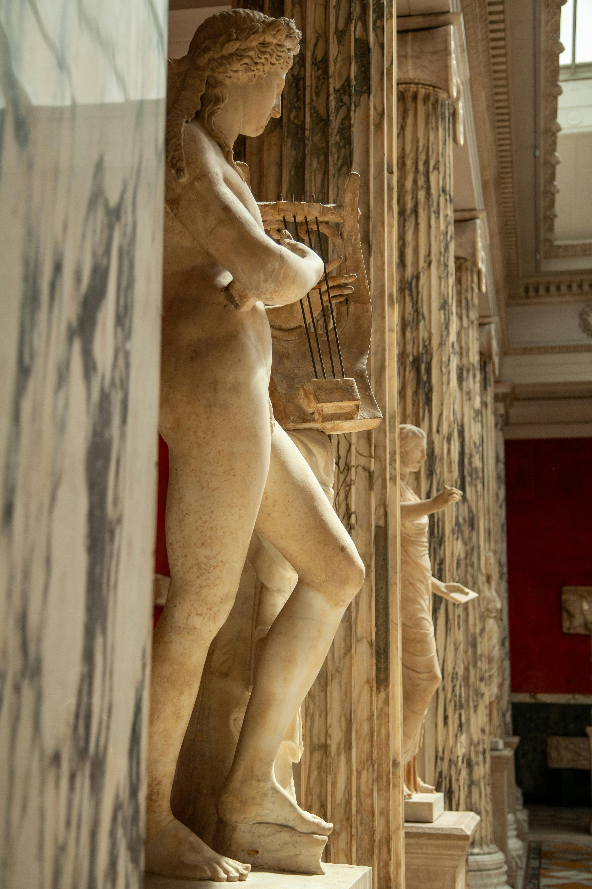

Καλωσήρθατε
Το Μουσείο Αρχαίων Μουσικών Οργάνων παρουσιάζει μια φανταστική συλλογή από λύρες, αυλούς, κιθάρες και άλλα όργανα της αρχαιότητας.
Ο ιστότοπος αποτελεί εκπαιδευτική εργασία και χρησιμοποιεί αποκλειστικά περιεχόμενο με άδεια CC0 ή συνθετικό/φανταστικό περιεχόμενο.

Εξερευνήστε τον χώρο
Google Maps
Momento360 – Πανοραμική αίθουσα